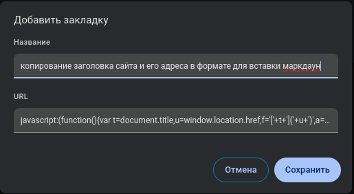
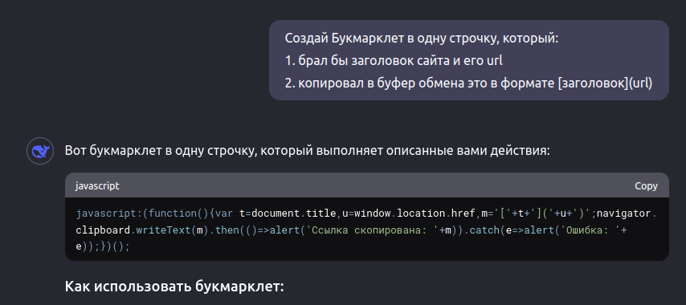
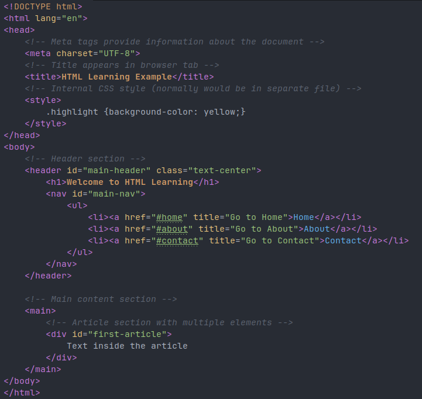
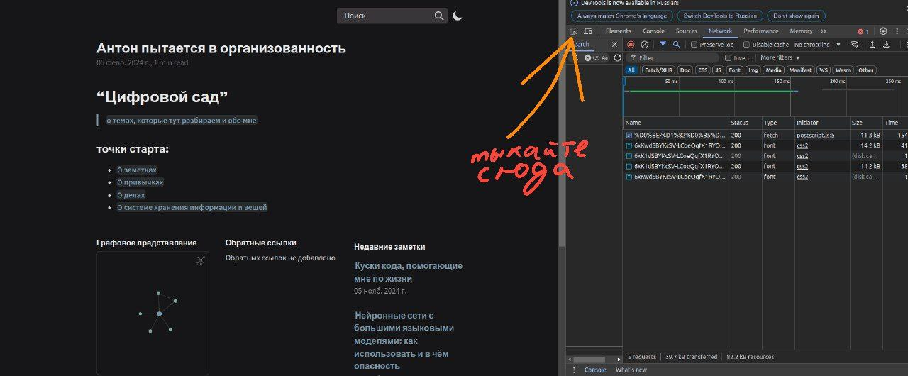
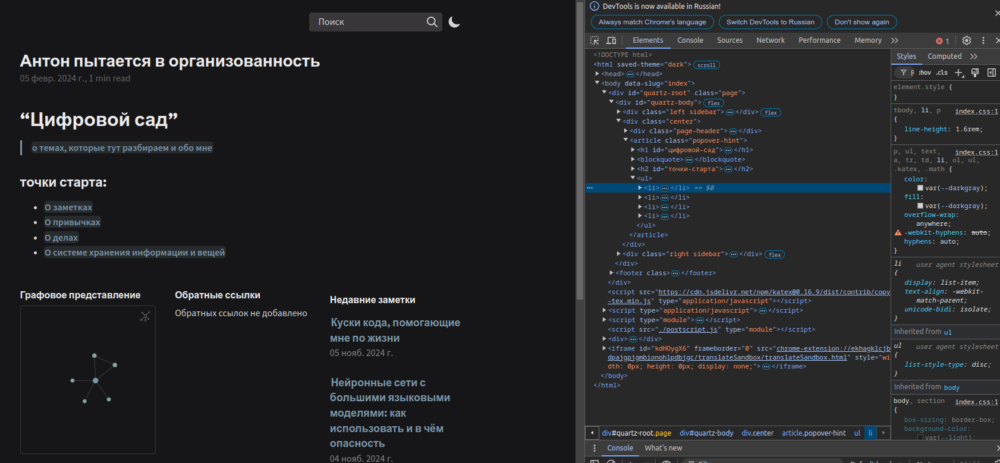

- добавить заголовок сайта в промт
- скопировать кусок текста в буфер обмена
- вставить текст в переводчик
- создать событие google calendar по информации на сайте
- вытащить e-mail человека
- форматировать url и заголовок для вставки в Obsidian
- …
Всё это можно сделать с помощью простых советских… закладок браузера. А с помощью chatGPT порог для автоматизации своих задачек стал гораздо ниже.
В закладках браузера можно хранить не только ссылку на сайт. Можно сохранить кусок JavaScript-кода: небольшую программку, выполняющую что-то хорошее на странице. А сам код может написать вам нейросеть.
Статья разделена на три части:
- какие задачи можно решить с букмаркетами
- как это делать — вкратце, если вы чуть чуть знаете, как выглядит веб-страница в исходном коде
- дополнение как это делать — если вы ни разу не сталкивались с нутром страниц и слова “JavaScript” или “HTML” вводит вас в ужас
что могут делать букмарклеты
Букмарклет — закладка браузера, содержащая не ссылку на избранный сайт, а кусок javascript кода.
Что можно там хранить?
- Ответ на примерах — для вдохновения — в начале текста. И в моей статье “Куски кода, помогающие мне по жизни”.
- Общий ответ — “всё, что можно сделать с javascript и браузерном API” (с ограничением до нескольких тысяч символов)
- Ответ между “слишком общим” и “слишком частным”
- можно скопировать любой текст (со страницы, ссылки,..) в буфер обмена и из него
- можно преобразовать текст в другой (например, вытащив из письма имя человека и подставив его в письмо)
- можно удалить со страницы баннеры или картинки
- можно изменить внешний вид — например, сделав текст более крупным
- можно автоматизировать повторяющиеся действия — например, если вам надо заполнить кучу форм или 10 раз нажать на кнопку
- можно взять данные с сайта и вставить их в url для перехода на другой сайт — например, в гугл.календаре в url можно задать целое мероприятие, которое потом появится у вас
Подумайте, делаете ли вы что-то похожее? Может что-то повторяется много раз? И тогда закладки с кодом решат вашу проблему
Как создать свою закладку с javascript кодом
Как сохранить код, когда он уже есть
Если у вас уже есть код — его нужно просто сохранить, создав новую закладку :)
Но если тыкнуть на “звёздочку” у сайта — закладка создастся с адресом этого сайта. Чтобы создать закладку со своим кодом, её надо создать с нуля чуть большим количеством действий.
- в google chrome
Ctrl+Shift+O→ меню в правом верхнему углу → “новая закладка” - в firefox
Ctrl+Shift+O→ в окне с управлением → “Управление” → “Создать закладку”

Теперь вставляем код! 
Как получить код для вставки?
Как создать js-код самостоятельно
в теории, его можно написать самому: это обычный javascript-код (“обычный” если вы его умеете писать), начинающийся со слова javascipt:. (такое же описание протокола, как если бы там стоял http:)
Пример полной версии кода (разбил на несколько строчек для удобства чтения):
javascript:(function(){
var t=document.title,u=window.location.href,f='['+t+']('+u+')' // в одной переменной (t) - заголовок, в другой (u) -- url. В третьей (f) -- строка вида [заголовок](url)
var a=document.createElement('textarea'); // создаём элемент, куда вставим текст -- так его потом можно будет копировать в буфер обмена
a.value=f; // помещаем в элемент нужный текст
document.body.appendChild(a);
a.select();
document.execCommand('copy'); // копируем текст в буфер обмена
document.body.removeChild(a); // удаляем созданный элемент
})();Как создать javascript-код с помощью chatGPT
Я немножко знаю javascript, но недостаточно свободно на нём пишу, чтобы создавать закладки самостоятельно… К счастью, нейросети с большими языковыми моделям могут справиться за нас!
Я использую DeepSeek - Into the Unknown — сайт бесплатный.
Алгоритм следующий:
- Решаете, что вам нужно собственно: что-то скопировать, сделать какие-то действия, дождаться пока какой-то элемент станет доступен, добавить какой-то текст к другому…
- Пишите промт
Создай Букмарклет в одну строчку, который: <и ваш алгоритм>. 
главная проблема — как сказать, “где искать текст”. Нужно понимание HTML
С появлением GPT главной проблемой внезапно становится не написание кода, а понимание, с чем собственно работать.
Если вам нужны все изображения со страницы, то вам повезло. Можно просто попросить взять их все и… что-нибудь сделать ¯\(ツ)/¯.
Если нужно что-то более прицельное — нажать на конкретную кнопку или взять текст из конкретного поля — придётся иметь базовые представления о том, как устроен сайт изнутри. Но это не очень сложно — следующий раздел для вас!
Для тех, кто не знает что такое javascript и как устроен html
Чтобы создавать javascript закладки не нужно знать практически ничего, кроме как понимать что собственно вам нужно. Код за вас напишет нейросеть, вставить его в закладку вы как-нибудь сможете :). Не нужно знать ничего, за одним исключением: понимать, как сказать нейросети: “мне нужна конкретно эта кнопочка” “мне нужено конкретно это поле с текстом”. Это тоже не очень трудно, но всё-таки надо знать матчасть.
Любой сайт состоит из трёх разнородных компонет: javascript, CSS, HTML
- javascript — это код, отвечающий за динамичность системы. Чтобы по нажатию на кнопку что-то да происходило. Но нужный нам кусочек напишет нейросеть
- CSS — это файлы стиля. Они отвечают за то, как выглядит сайт: будет ли кнопка синей или жёлтой. Видимой или невидимой. Про них вам надо думать только если вы хотите изменить стиль сайта. В иных случаях думать не будем)
- HTML — язык разметки сайта. Он “размечает” где что находится — где какие кнопки стоят и внутрь каких других элементов помещаются.
Как посмотреть html сайта
Вот как выглядит типичный html код 
вы можете посмотреть код любой страницы сами:
- Нажмите
Ctrl+Shift+I - появится “консоль разработчика”
- тыкайте на 
- теперь при наведении на разные части сайта вы будете видеть их html-код 
Советую потыкаться на несколько сайтов и поискать закономерности!
устройство HTML: теги и их атрибуты
html код состоит из текста и тегов (внутри <body></body> хранится всё “тело” сайта, а внутри <h1></h1> — самый большой заголовок, “заголовок первого уровня”).
Каждый тег нужен для чего-то своего. Если вы не испугаетесь картинки выше а внимательно её рассмотрите (и если умеете читать по английски) — наверняка быстро поймёте что к чему.
У тегов есть атрибуты — например, атрибут href у ссылки <a> говорит, по какому адресу пойти при клике на ссылку.
Среди атрибутов есть два довольно специфичных: это id и class (посмотрите, например, на тег <header id="main-header" class="text-center">)
- id указывает на уникальный идентификатор тега. Больше такого элемента на странице быть не может
- class указывает на принадлежность некоторому “множеству”. Например, “все синие кнопки” могут быть помечены классом
blue-buttons. А в примере классtext-centerпомечает, что уheaderтекст должен быть центрирован по центру
Как сказать GPT: “мне нужен вот та вот кнопочка”
Теперь, когда вы знаете как смотреть html код страницы, пора понять, как же сказать “что вам надо”.
А надо вам две вещи:
- вам нужно как-то описать ровно тот (или те) элементы, на которые вы смотрите
- вам надо, чтобы это описание было хоть немного стабильным для сайта — чтобы при перезагрузки страницы оно не менялось
На некоторых сайтах это сделать, конечно, тяжеловато. Но часто вам достаточно:
- знать, что за тег
- знать класс тега или его другие атрибуты
- говорить, что это тег какой-то по счёту (вообще в документе или у его родителя)
Понимаете, как идентифицировать нужный вам текст/картинку/кнопку/… и пишите в промт:
нажми на
<button class="submit">, которая находится внутри формы<form>. Подожди 5 секунд и скопируй текст с появившегося поля<input id="my_result">
… ну или что-то ещё пишете :)
Заключение
Выше я попытался рассказать, как создавать букмарклеты — javaScript закладки. Они позволяют немного автоматизировать мелкие задачки, которые вы делаете в браузере.
Статья показывает много терминов и довольно сжата: в зависимости от вашего уровня она покажется или чересчур простой или очень сложной. Но попробуйте пойти по алгоритму, что я рассказал и вы увидите, что не всё так оно и сложно :)
А итоговый алгоритм следующий:
- поймите, что вам собственно хочется автоматизировать на сайте
- если вам нужны какие-то конкретные кнопки, поля или изображения — откройте консоль разработчика (
Ctrl+Shift+I), наведите на элементы и узнайте, как они выглядят в коде.- проявите здравый смысл чтобы понять, как вам отделить найденные вами элементы от остальных на сайте.
- Воспользуйтесь тем, как выглядит их тег (
<a>,<button>), какие у них атрибуты (в особенностиid=...иclass=...). - Возможно, проще их будет идентифицировать как “какой-то ребёнок родителя”
- Избегайте привязываться к “странным” атрибутам: как
id="book-dashdjk42". Если атрибут выглядит как сгенерированный компом — вполне возможно он изменится при перезагрузке
- зайдите в вашу любимую нейросеть и скажите ей составить однострочный букмарклет по вашему алгоритму. Не забудьте про элементы, которые вы нашли на предыдущем шаге :)
- скопируйте получившийся javascript-код
- зайдите в “закладки” браузера и создайте новую закладку
- в качестве url вставьте скопированный код
- тыкайте на закладку, находясь на сайте — код будет исполняться и делать то, чего вы бы хотели
обсуждение в Телеграм